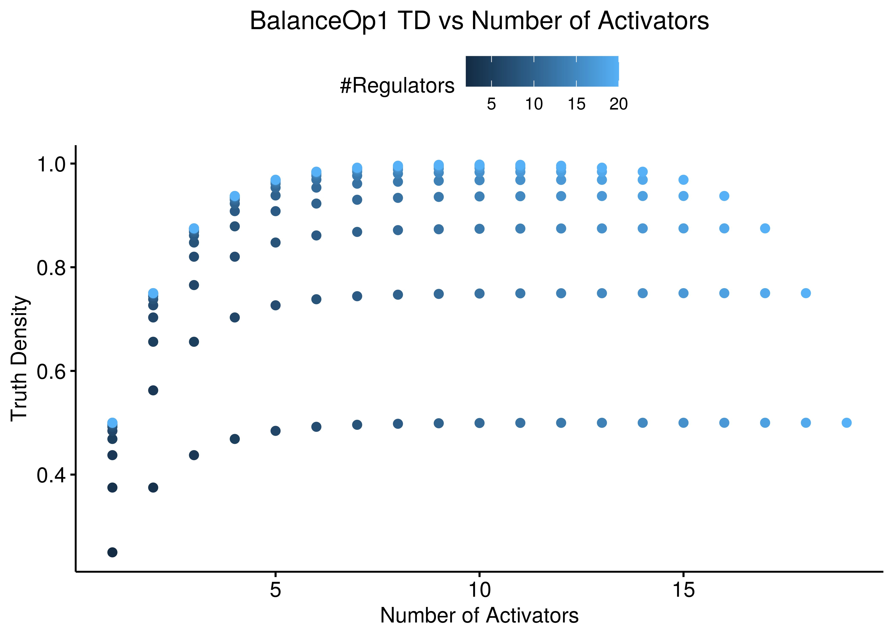
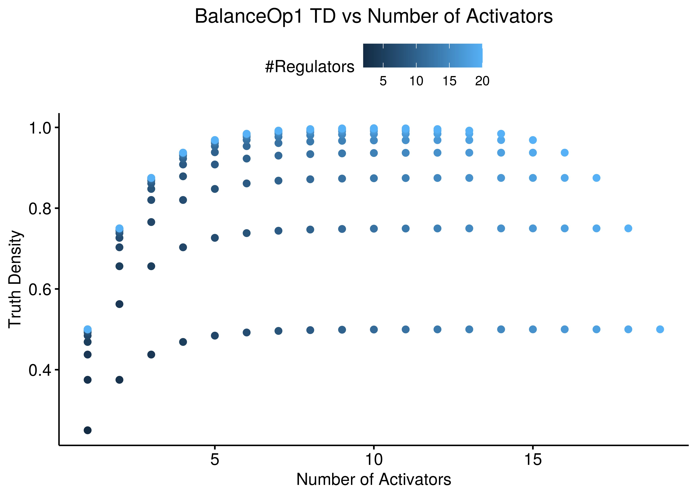

BBR Function Analysis
Balance Boolean Regulatory Functions (BBRs)
BBR => Balance Boolean Regulatory Functions
Let \(f\) be a boolean function \(f(x,y):\{0,1\}^n \rightarrow \{0,1\}\), with \(m\) activators \(x=\{x_i\}_{i=1}^{m}\) and \(k\) inhibitors \(y=\{y_i\}_{i=1}^{k}\), that is a total of \(n=m+k\) regulators.
A subset of BBRs have a non-DNF representation that puts the different category regulators in separate groups and a link boolean operator in between them.
As such, for a link operator to make sense, we have that \(m,k \ge 1\) (at least one regulator in each category).
An example of such a function that has been used in the literature (Mendoza and Xenarios 2006) is the formula with the AND-NOT link operator:
AND-NOT: \[f(x,y) = \left(\bigvee_{i=1}^{m} x_i\right) \land \lnot \left(\bigvee_{i=1}^{k} y_i\right)\]
A variant of that one that shifts the balance in favor of the activators (as we will see the truth density significantly increases) is the function with the OR-NOT link operator:
OR-NOT: \[f(x,y) = \left(\bigvee_{i=1}^{m} x_i\right) \lor \lnot \left(\bigvee_{i=1}^{k} y_i\right)\]
Another one of this type of functions is the next one:
BalanceOp1: \[f(x,y) = \bigvee_{\forall (i,j)}^{m,k}(x_i\land \lnot y_j) = \left(\bigvee_{i=1}^{m} x_i\right) \land \left(\bigvee_{i=1}^{k} \lnot y_i\right)\]
Next, we introduce some threshold functions with pseudo-Boolean constraints:
exp_act_win: \[f_{act-win}(x,y)=\begin{cases} 1, & \text{for } \sum_{i=1}^{m} x_i \ge \sum_{i=1}^{k} y_i\\ 0, & \text{otherwise} \end{cases}\]exp_inh_win: \[f_{inh-win}(x,y)=\begin{cases} 1, & \text{for } \sum_{i=1}^{m} x_i \gt \sum_{i=1}^{k} y_i\\ 0, & \text{otherwise} \end{cases}\]
Note that: \(f_{inh-win}(x,y) = \lnot f_{act-win}(y,x)\).
I searched for an analytical formula for the two last functions (they get pretty big!). More info and discussion about these 2 last formulas, see the math.stackexchange question.
Truth Density Data Analysis
Data
Truth Density (TD) of a boolean equation/expression, given it’s equivalent truth table, is the number of rows that the expression is active divided to the total number of rows \((2^n)\).
I created every possible truth table for up to \(20\) variables (variables here means regulators for us) and calculated the AND-NOT, OR-NOT, BalanceOp1, exp_act_win, exp_inh_win results for every possible configuration of the number of activators and inhibitors that added up to the number of regulators.
Then, from the truth tables I calculated the truth density of each operator in each particular configuration.
See part of the data below:
stats = readRDS(file = "stats.rds")
stats[1:5,] %>% kable(caption = "Thuth Density Data", digits = 2)| num_reg | num_act | num_inh | td_and_not | td_or_not | td_balance_op | td_exp_act | td_exp_inh |
|---|---|---|---|---|---|---|---|
| 2 | 1 | 1 | 0.25 | 0.75 | 0.25 | 0.75 | 0.25 |
| 3 | 1 | 2 | 0.12 | 0.62 | 0.38 | 0.50 | 0.12 |
| 3 | 2 | 1 | 0.38 | 0.88 | 0.38 | 0.88 | 0.50 |
| 4 | 1 | 3 | 0.06 | 0.56 | 0.44 | 0.31 | 0.06 |
| 4 | 2 | 2 | 0.19 | 0.81 | 0.56 | 0.69 | 0.31 |
Use the fun.R script to reproduce this data.
Truth Density formulas
Also, I have proved the exact formulas for the truth densities in the case of the AND-NOT and OR-NOT link operators (see here for a proof sketch).
I write them here explicitly, as well as their long-term behaviour (for large \(n\). number of regulators):
AND-NOT: \[TD_{AND-NOT}=\frac{2^m-1}{2^n} \xrightarrow{n \text{ large}} \frac{1}{2^k}\]OR-NOT: \[TD_{OR-NOT}=\frac{2^n-2^k}{2^n} \xrightarrow{n \text{ large}} 1-\frac{1}{2^m}\]
For large \(n\), the \(TD_{AND-NOT}\) depends only on the number of inhibitors while the \(TD_{OR-NOT}\) depends only on the number of activators.
Also, again for large \(n\), the extreme case of having a TD value equal to \(0.5\) is a result of having only one of the regulators being an inhibitor (activator) of the AND-NOT (OR-NOT) equation.
We can use the data above to validate the formulas from the proof (up to \(n=20\)):
# Validate AND-NOT Truth Density formula
formula_td_and_not = stats %>%
mutate(formula_td_and_not = (2^num_act - 1)/(2^num_reg)) %>%
pull(formula_td_and_not)
all(stats %>% pull(td_and_not) == formula_td_and_not)[1] TRUE# Validate OR-NOT Truth Density formula
formula_td_or_not = stats %>%
mutate(formula_td_or_not = (((2^num_act - 1) * (2^num_inh)) + 1)/(2^num_reg)) %>%
pull(formula_td_or_not)
all(stats %>% pull(td_or_not) == formula_td_or_not)[1] TRUEAND-NOT vs OR-NOT
Comparing the AND-NOT and OR-NOT truth densities across the number of regulators:
# tidy up data
stats_and_or = pivot_longer(data = stats, cols = c(td_and_not, td_or_not),
names_to = "lo", values_to = "td") %>%
select(num_reg, lo, td) %>%
mutate(lo = replace(x = lo, list = lo == "td_and_not", values = "AND-NOT")) %>%
mutate(lo = replace(x = lo, list = lo == "td_or_not", values = "OR-NOT")) %>%
rename(`Link Operator` = lo)
ggboxplot(data = stats_and_or, x = "num_reg", y = "td",
color = "Link Operator", palette = "Set1",
title = "AND-NOT vs OR-NOT Truth Densities",
xlab = "Number of regulators", ylab = "Truth Density") +
theme(plot.title = element_text(hjust = 0.5))
Figure 1: AND-NOT vs OR-NOT Truth Densities across all possible activators and inhibitors combinations up to 20 regulators
- The more regulators there are, the more likely it is that the
AND-NOTlink operator in the boolean equation will result in an inhibited target and that theOR-NOTlink operator in an active target. - For \(n>6\), the points outside the boxplots (with a truth density of \(\frac{1}{2}, \frac{1}{4}, 1-\frac{1}{4},\frac{1}{8},1-\frac{1}{8},...\)) correspond to the long-term behaviour of the truth density formulas shown above, but where there is also large imbalance between the number of activators and inhibitors.
We can also check the relation between TD and number of activators and inhibitors in each case.
The following two figures show us why the number of inhibitors are more decisive in the AND-NOT case:
ggscatter(data = stats %>% rename(`#Regulators` = num_reg), x = "num_inh",
y = "td_and_not", color = "#Regulators",
ylab = "Truth Density", xlab = "Number of Inhibitors",
title = "AND-NOT TD vs Number of Inhibitors") +
theme(plot.title = element_text(hjust = 0.5))
ggscatter(data = stats %>% rename(`#Regulators` = num_reg), x = "num_act",
y = "td_and_not", color = "#Regulators",
ylab = "Truth Density", xlab = "Number of Activators",
title = "AND-NOT TD vs Number of Activators") +
theme(plot.title = element_text(hjust = 0.5))

Figure 2: AND-NOT TD vs Number of Activators and Inhibitors
In the OR-NOT case the number of activators is more important:
ggscatter(data = stats %>% rename(`#Regulators` = num_reg), x = "num_inh",
y = "td_or_not", color = "#Regulators",
ylab = "Truth Density", xlab = "Number of Inhibitors",
title = "OR-NOT TD vs Number of Inhibitors") +
theme(plot.title = element_text(hjust = 0.5))
ggscatter(data = stats %>% rename(`#Regulators` = num_reg), x = "num_act",
y = "td_or_not", color = "#Regulators",
ylab = "Truth Density", xlab = "Number of Activators",
title = "OR-NOT TD vs Number of Activators") +
theme(plot.title = element_text(hjust = 0.5))

Figure 3: OR-NOT TD vs Number of Activators and Inhibitors
BalanceOp1 TD
If we add the BalanceOp1 formuls’s TD results to the first plot we have:
# tidy up data
stats_and_or_balance = pivot_longer(data = stats, cols = c(td_and_not, td_or_not, td_balance_op),
names_to = "lo", values_to = "td") %>%
select(num_reg, lo, td) %>%
mutate(lo = replace(x = lo, list = lo == "td_and_not", values = "AND-NOT")) %>%
mutate(lo = replace(x = lo, list = lo == "td_or_not", values = "OR-NOT")) %>%
mutate(lo = replace(x = lo, list = lo == "td_balance_op", values = "BalanceOp1")) %>%
rename(`Link Operator` = lo)
ggboxplot(data = stats_and_or_balance, x = "num_reg", y = "td",
color = "Link Operator", palette = "Set1",
title = "AND-NOT vs OR-NOT vs BalanceOp1 Truth Densities",
xlab = "Number of regulators", ylab = "Truth Density") +
theme(plot.title = element_text(hjust = 0.5))Figure 4: AND-NOT vs OR-NOT vs BalanceOp1 Truth Densities across all possible activators and inhibitors combinations up to 20 regulators
- The
BalanceOp1TD values are closer to the TD values of theOR-NOTformula compared to theAND-NOTone. - The
BalanceOp1is less biased compared to theOR-NOTlink operator, but still for large \(n\) (regulators) it practically makes the target activated.
As we can see in the following two figures, the BalanceOp1 shows a more balanced dependency between the number of activators and inhibitors:
ggscatter(data = stats %>% rename(`#Regulators` = num_reg), x = "num_inh",
y = "td_balance_op", color = "#Regulators",
ylab = "Truth Density", xlab = "Number of Inhibitors",
title = "BalanceOp1 TD vs Number of Inhibitors") +
theme(plot.title = element_text(hjust = 0.5))
ggscatter(data = stats %>% rename(`#Regulators` = num_reg), x = "num_act",
y = "td_balance_op", color = "#Regulators",
ylab = "Truth Density", xlab = "Number of Activators",
title = "BalanceOp1 TD vs Number of Activators") +
theme(plot.title = element_text(hjust = 0.5)) 

Figure 5: BalanceOp1 TD vs Number of Activators and Inhibitors
Threshold Functions TD
In contrast, if we check the truth density of the \(f_{act-win}(x,y)\) and \(f_{inh-win}(x,y)\) boolean functions we have:
# tidy up data
stats_functions = pivot_longer(data = stats, cols = c(td_exp_act, td_exp_inh),
names_to = "fun", values_to = "td") %>%
select(num_reg, fun, td) %>%
mutate(fun = replace(x = fun, list = fun == "td_exp_act", values = "Activators Win")) %>%
mutate(fun = replace(x = fun, list = fun == "td_exp_inh", values = "Inhibitors Win")) %>%
rename(`Equation Formula` = fun)
ggboxplot(data = stats_functions, x = "num_reg", y = "td",
color = "Equation Formula", palette = "lancet",
title = TeX("Truth Densities of $f_{act-win}(x,y)$ and $f_{inh-win}(x,y)$"),
xlab = "Number of regulators", ylab = "Truth Density") +
theme(plot.title = element_text(hjust = 0.5))
Figure 6: Truth Desities of two robust boolean formulas across all possible activators and inhibitors combinations up to 20 regulators
- Both boolean functions have a large variance of truth densities irrespective of the number of regulators.
- The median values seem to converge to \(0.5\) for both formulas.
- The median value of truth density for the \(f_{act-win}(x,y)\) is always larger than the \(f_{inh-win}(x,y)\) (as expected).
TD Data Distance
We check how close are the truth density values of the different proposed BBRs, also compared to the proportion of activators, e.g. if a BBR has 1 activator and 5 inhibitors (resp. 5 activators and 1 inhibitor) I would expect my regulatory function’s output to be statistically more inhibited (resp. activated). We find the euclidean distance between the different truth density values and show them in a table and dendrogram format:
act_prop = stats %>% mutate(act_prop = num_act/num_reg) %>% pull(act_prop)
td_and_not = stats %>% pull(td_and_not)
td_or_not = stats %>% pull(td_or_not)
td_balance_op = stats %>% pull(td_balance_op)
td_exp_act = stats %>% pull(td_exp_act)
td_exp_inh = stats %>% pull(td_exp_inh)
d = dist(rbind(act_prop, td_and_not, td_or_not, td_balance_op, td_exp_act, td_exp_inh))# color `act_prop` column
breaks = quantile(unname(as.matrix(d)[, "act_prop"]), probs = seq(.05, .95, .05), na.rm = TRUE)
col = round(seq(255, 40, length.out = length(breaks) + 1), 0) %>%
{paste0("rgb(255,", ., ",", ., ")")} # red
caption.title = "Table 1: Euclidean Distances between vectors of truth density values (Symmetric)"
DT::datatable(data = d %>% as.matrix(), options = list(dom = "t", scrollX = TRUE),
caption = htmltools::tags$caption(caption.title, style="color:#dd4814; font-size: 18px")) %>%
formatRound(1:6, digits = 3) %>%
formatStyle(columns = c("act_prop"), backgroundColor = styleInterval(breaks, col))plot(hclust(dist(d)), main = "Distance Dendogram of Thruth Densities",
ylab = "Euclidean Distance", sub = "BBR Truth Densities", xlab = "")
- The threshold functions have truth densities values that are closer to the proportion of activators for a varying number of regulators, compared to the
AND-NOTandOR-NOTformulas. As such they represent more realistic candidates for regulatory functions from a statistical point of view. - The TD values of
OR-NOTandBalanceOp1are in general very close (as we’ve also seen in previous Figure)
Correlation
We will now check the correlation between each pair of operators/proposed functions, as well as the number of regulators, inhibitors and activators:
M = cor(stats, method = "kendall")
res = cor.mtest(stats, method = "kendall")
corrplot(corr = M, type = "upper", p.mat = res$p, sig.level = c(.001, .01, .05),
pch.cex = 1, pch.col = "white", insig = "label_sig", tl.col = "black", tl.srt = 45)
Figure 7: Correlation Matrix of Truth Densities and number of regulators
- The two functions results \(f_{act-win}(x,y), f_{inh-win}(x,y)\) are highly correlated as expected
- Lower
AND-NOTTD values highly correlate with higher number of inhibitors - Higher
OR-NOTTD values highly correlate with higher number of activators